2014/2/7～4/15 シリンダーヘッドオーバーホール ＆ ハイカム ～後編～
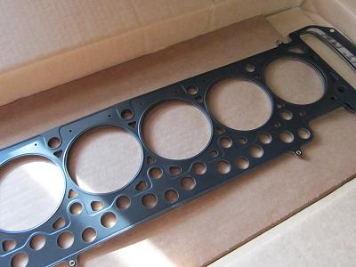 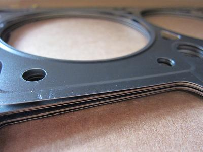 これが取り寄せたメタルガスケットだ。 Ｍ３０はヘッドガスケット抜けの持病がある。ガスケットの消耗を気にして踏めないのは嫌なので今回はメタルを選択した。 金属がミルフィーユ状になっていて、ずっしり重くて頼もしい！ 以前は、今は無きPower Stationでも扱っていたが今となっては国内で調達するのは難しいだろう。 メタルガスケットを作る業者に見積もりを依頼したが、最低ロットが「20枚 １枚４万円～」の見積もりだった（汗 面研をすればオーバーサイズが必要になってくるし・・・ まず日本にＭ３０マニアがそんなにいるだろうか（笑 そこで、ガスケットはChaChaさんオススメのVAC motorsportから購入することにした。 ＣＯＭＥＴＩＣというアメリカのガスケット専門ブランドの物で品質も問題なさそうだ。 M30にはシリンダーボア径が88mmと93mmが存在する。 M30B35であれば93mmでＯＫだ。 ボア径に関してはALPYさんにアドバイスをもらった。 |
||||||||||||
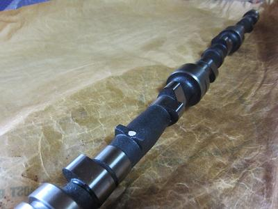 これが今回入手した ＳＣＨＲＩＣＫのハイカムだ。 このカムはレブリミットを上げない限り、強化バルブスプリングは必要ない。 バルブタイミングの調整も必要かと心配していたが、必要なさそうだ。 ちなみにＭ３０用の調整式スプロケットは調べた限り、純正をバーニア加工したものしか無かった。 カムの詳細は以下のようになっている。 Cam Specs002201840-04
ちゃんとアイドリングするのだろうか・・・？ |
||||||||||||
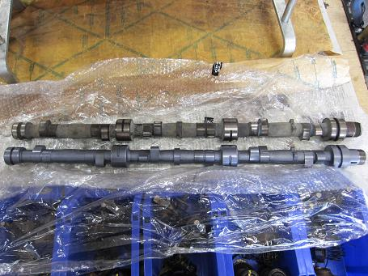 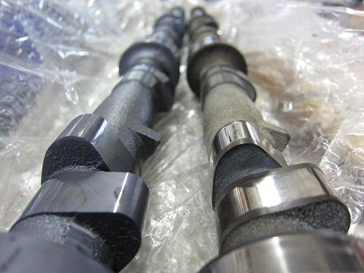 取り外したカムと比較していこう。 写真上がノーマル 下のグレーになっているのがハイカムだ。 ハイカムには低摺動を期待しモリブデンショット加工を施してもらった。 モリブデンショット後の表面はとても滑らかだった。 どれくらい持つのか未知なところはあるが、抵抗が減るのは間違いないだろう。 |
||||||||||||
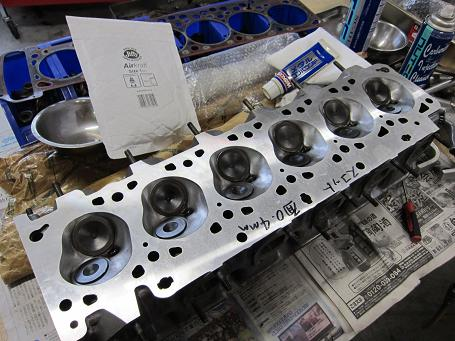 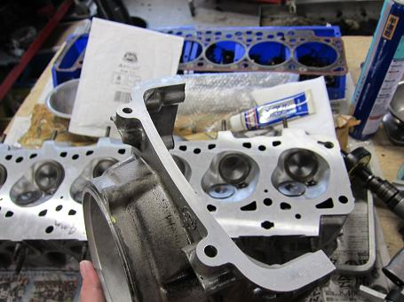 メタルガスケットを使うことと、最近続いていたオーバーヒートによる歪みが気になり面研を施すことにした。 面研を行うときはフロントカバーも同じだけ面研してもらう。 今回は少し圧縮を上げるために＋0.4mm研磨を行った。 純正のガスケット厚が1.72mm 今回のメタルガスケットが＋0.3mmオーバーサイズで2.03mmだ。 ガスケットがメタルなので、シリンダーヘッドとブロックの熱が綺麗に分散してくれる。 熱量の多いＭ３０にメタルガスケットはベストアイテムだろう。 ちなみにＢ１０ Ｂｉｔｕｒｂｏのヘッドガスケットを取ればメタルが出てくる。 価格は不明・・・（汗 |
||||||||||||
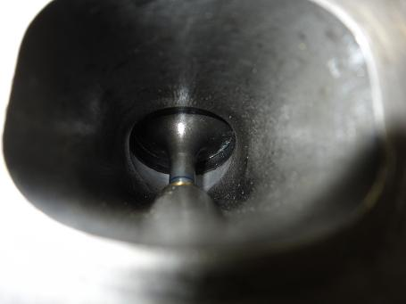 とてもワクワクする１枚！ フィーリングの要！ バルブのすり合わせだ。最近のお手軽コンピューターチューンでは味わえない部分！ 打ちかえられたガイドにバルブを通すと、オイル膜分の絶妙なクリアランスが保たれていた。 |
||||||||||||
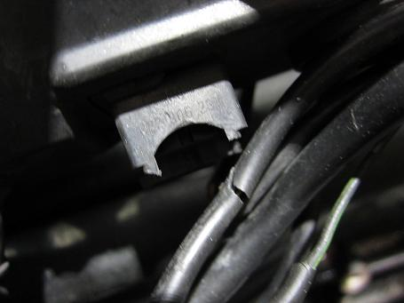 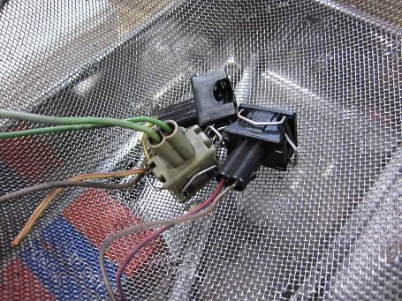 写真はインジェクターのカプラーだ。 インマニの上で常に熱にさらされ、触ると割れてしまうくらいにパキパキになっている。 通常このカプラーだけでは交換できず「エンジンハーネスassy交換 １５諭吉の刑」だ。 いろいろ調べていると、ランチア用でイギリスに同じカプラーの在庫があった。 早速取り寄せてみたが、更に良く調べると・・・ 日産Ｌ型エンジン用のカプラーと同じだった（爆 高い送料を払ったのに日本で買えたとは・・・ ○|￣|_ Ｍゴローがそんなことをしている間に、主治医は程度の良いカプラーを探してきて６個全て交換してくれていた。 主治医が天使に見えた（笑 言わないながらも、各所にこのような気遣いが入るのはとても嬉しい。 |
||||||||||||
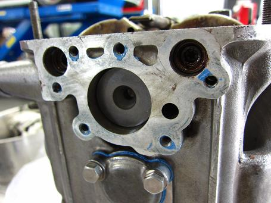 シリンダーヘット後部の漏れたら困る部分だ。 車載状態では上のフタを外すのは至難の業だろう。 ここもしっかりガスケットを塗って組んでいた。 |
||||||||||||
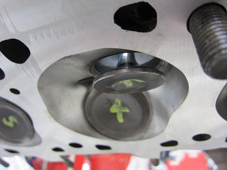 すり合わせが終わり、ハイカムを組んだ状態のバルブ バルブの傘が分厚く見える。 まだまだチューニングの余地はありそうだ。 |
||||||||||||
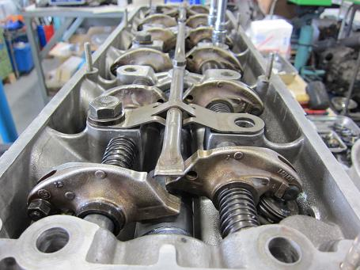 組み上がったシリンダーヘッド 機能美だろうか。 無駄の無い構造にみとれてしまう。 バルブクリアランスはノーマルだと0.3mmだが、SCHRICKの仕様書では0.25mmが指定になっている。 高回転でのサージングを防いで追従をよくする為だろうか。 Ｍ３０のどこか緩いフィーリングを残すため、今回は0.25mm甘めで組んでもらうことにした。 |
||||||||||||
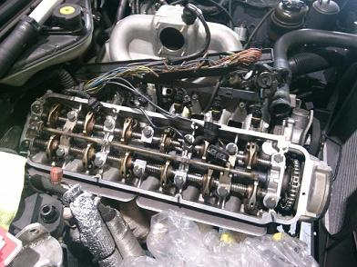 シリンダーブロックに載った図 あとは配線などを元に戻していく作業だが、割れやすくなったプラスチックに気を使ったことだろう。 完成後、慣らしの間は2000回転までで走った。 300キロくらい走った辺りからエンジンが良く回るようになってきた。 ハイカム＝トルクが落ちる と言われているが、気になるほどのトルクの落ち込みは無かった。 排気量が大きいとあまり気にしなくて良いだろう。 街乗りではパワーに関してはそれほど劇的な変化は感じない。 燃費は以前に比べ、２割ほど悪くなったように思う。 慣らしが済んだ頃に踏んだからだろうか。もう少し燃費は様子を見よう。 一番気がかりだったのはアイドリングだ。 車体が振れるくらいに「バラッバラッ」と脈打っている。 知らない人が見れば「壊れてんじゃない？」と思うだろう。 そこに、元々少し音量の大きめのマフラーと相まって「BMW＝高級車＝静かで上品」といった一般的な認識を見事にブチ壊している。 もう下品としか言いようの無い音だ（笑 オーバーラップが大きくなったことで以前より響くようになってしまった。 家族や友人らからは 「迎えに来ると２つ先の信号から分かる。連絡はいらない」 「帰ってくると家が揺れる」 「え？！ヤンキーなん？」 「青い悪魔」 など散々な言われようだ。 できる限り周りの理解を損ねるようなことは避けたい。 音量を抑えるために可変バルブをつけようかと考えている。 その後2000kmほど走ったが、3000回転から上が抜群に気持ちいい。 ３速3000回転キープでフルスロットルにすると一瞬フワッと浮くような感覚に襲われる。 高回転でしっかりパワーが出ているようだ。 回りだすとアイドリングの振動が嘘のようにとても滑らかだ。 重量物がバランスよく回っている感じと言えば分かりやすいだろうか。 総合的な感想としては、排気音が少し気になることを除けば大満足だ。 今回の作業では主治医の水野氏には大変お世話になった。 |